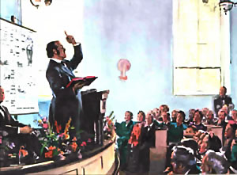
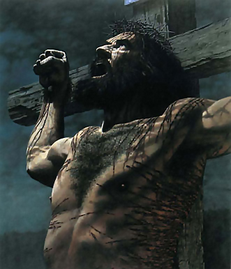
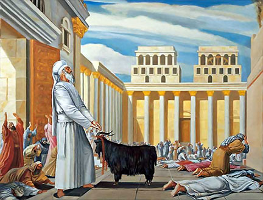
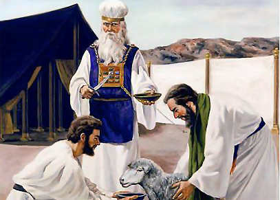
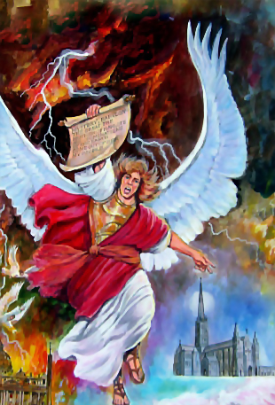

A MENSAGEM DO PRIMEIRO ANJO
Satanás manchou o santuário celestial quando abandonou o amor divino e buscou a satisfação própria, aflorando o pecado original. Após a queda de Adão o SENHOR tinha um imane problema, precisava solucionar a questão atípica do pecado, então, Ele apresentou o Plano de Redenção, mostrou sua justiça punindo o pecado e sua misericórdia oferecendo o cordeiro vicariante (substituto) pagando o preço exigido pela transgressão da lei. A justiça de Deus e sua misericórdia se encontraram na cruz, segundo escritos da lavra de Paulo: Romanos 3:26. O Salmista retrata fielmente este evento quando diz: Salmos 85:10 O Plano de Redenção, retrata uma purificação do santuário celestial esculpida no livro de Daniel e Apocalipse, esta purificação começa com a mensagem do primeiro anjo, tipificando a Expiação ou juízo de investigação.
I Pedro 4:17.
II Pedro 2:9.
A profecia da primeira mensagem angélica, apresentada em Apocalipse 14, teve o seu cumprimento no movimento do advento, de 1840 a 1844. Tanto na Europa como na América do Norte, homens de fé e oração ficaram profundamente comovidos ao ser sua atenção chamada para as profecias, e, examinando o Registro Inspirado, viram convincentes evidências de que o fim de todas as coisas estava às portas. O Espírito de Deus instou com Seus servos para darem a advertência. Por todas as partes disseminou-se a mensagem do evangelho eterno.
Ellen G. White, História da Redenção, pág 356
A mensagem do Terceiro Anjo, é a justiça de Cristo, quando a igreja recebe, traz comunhão com Deus e uns com os outros preparando-a para a hora do juízo, esta mensagem deve ser pregada e vivida pelo povo de Deus como trombeta.
Apocalipse 14:6-7.
A mensagem do primeiro anjo de Apocalipse 14, anunciando a hora do juízo de Deus e apelando para os homens a fim de O temer e adorar, estava destinada a separar o povo professo de Deus das influências corruptoras do mundo, e despertá-lo a fim de ver seu verdadeiro estado de mundanismo e apostasia. Deus enviou à igreja, nesta mensagem, uma advertência que, se fosse aceita, teria corrigido os males que a estavam apartando dEle. A igreja de novo teria atingido o bendito estado de unidade, fé e amor, que houve nos dias apostólicos, em que "era um o coração e a alma" dos crentes, e "anunciavam com ousadia a Palavra de Deus", dias em que "acrescentava o SENHOR à igreja aqueles que se haviam de salvar.
Ellen G. White, 1985, O Grande Conflito, pág 379
O som da Trombeta de advertência tem de ser ouvido. Estamos vivendo numa época terrivelmente pecaminosa. A adoração a Deus se tornará corrompida, a não ser que haja homens ativo em todos os postos de dever.
Ellen G. White, Testemunhos para a Igreja 4, pág 517
O anjo voando pelo meio do céu proclamando o evangelho eterno a todas as nações, povos, tribos e línguas, representa o povo de Deus anunciando a proximidade da hora do juízo. Esta é a mensagem do primeiro anjo proclamada por Guilherme Miller como trombeta nos Estados Unidos de 06/08/1831 a 21/03/1844, e a trombeta do SENHOR será ouvida novamente no futuro e abalará não só a terra como o céu. Baseado na profecia, Daniel 8:14. No devido tempo, ao término do aludido período profético, embora o Conflito dos Séculos determine a data de 22 de outubro de 1844, data estipulada por Samuel Snow, ela requer cuidados porque ele pegou esta data dos judeus Caraítas que adotavam veadar, o judaísmo tradicional celebrou naquele ano a expiação no dia 21 de setembro de 1844. O certo é que o juízo Investigativo que simboliza a Expiação começou no céu naquele ano, era a obra purificadora do santuário que Jesus iniciou e o anjo estava alertando o mundo para temer a Deus e guardar seus mandamentos com voz de trombeta, segundo o profeta Joel.
Joel 2:1.
Hebreus 12:26.
Guilherme Miller e os outros, em seus estudos a declaração contida em Daniel 8:14 __ Até duas mil e trezentas tardes e manhãs, e o santuário será purificado __ verificaram que esse longo período terminaria em 1844. Durante os dez anos que precederam o décimo dia do sétimo mês (Tempo Judaico) em 1844, cada nação civilizada da face da terra ouviu em tons de trombeta o anúncio da mensagem do Apocalipse 14:6-7.
HASKELL, Stephen N. A Cruz e sua Sombra, pág 211
Aproxima-se o tempo em que a trombeta do SENHOR novamente será ouvida pelos mortais, e suas notas abalarão não só a terra, mas também o céu. As distintas notas daquela trombeta penetrarão nos recantos mais ocultos da terra. E, como antigamente a trombeta convocava todo o Israel diante do SENHOR, assim cada filho de Deus que dorme na terra ouvirá o chamado da trombeta, ressurgindo para encontrar-se com o SENHOR. Toda a terra ecoará aos passos da inumerável companhia de redimidos, quando os vivos e os santos ressurretos reunirem-se para encontrar o SENHOR, em resposta ao bendito chamado da última trombeta a soar sobre esta terra amaldiçoada pelo pecado.
HASKELL, Stephen N. A Cruz e sua Sombra, pág 214
A mensagem de Guilherme Miller alertando nações, povos e línguas para adorar o SENHOR é a mensagem do primeiro anjo, convidando ao arrependimento, confissão de pecados e consagração porque o dia do juízo de investigação tipificado pelo dia da Expiação está as portas. Está mensagem tipificava a trombeta da Festa dos Tabernáculos, convocando o povo para o dia da expiação (Juízo investigativo). Então, podemos imaginar que esse dia já se cumpriu? Não, porque com vimos acima a trombeta do SENHOR soará mais uma vez e abalará a terra e o céu, assim com as três mensagens angélicas ainda não se cumpriram totalmente, houve um cumprimento parcial, como o dia da expiação já iniciou, porém, ainda não se consumou, vejamos:
Números 29:1.
É bem evidente que, como a Páscoa, a Festa das Trombetas é tanto comemorativa quanto simbólica. Era celebrada dez dias antes do Dia da Expiação, o símbolo do grande juízo de investigação que teve inicio em 1844, ao fim do longo período profético dos 2300 anos de Daniel 8:14.
HASKELL, Stephen N. A Cruz e sua Sombra, pág 210
No símbolo, as trombetas eram tocadas por todo o Israel, advertindo-os da aproximação do solene dia da Expiação. No antítipo, devemos identificar alguma mensagem mundial que foi proclamada em tons de trombetas, anunciando a proximidade do tempo em que o grande dia antitípico da expiação, juízo investigativo, seria estabelecido nos céus (Dan. 7:9-10). Começando com os anos de 1833 e 1834 e estabelecendo-se até 1844, tal mensagem foi dada ao mundo em tons de trombeta, anunciando ser chegada a hora do seu juízo.
HASKELL, Stephen N. A Cruz e sua Sombra, pág 211
Quando será o fim das mensagens? O fim das três mensagens angélicas, bem como a expiação, terá seu total cumprimento quando Jesus sair do Santuário e dizer: Está consumado, tal como aconteceu com os tipos do primeiro advento. Portanto, como trombeta as três mensagens ainda devem ser proclamadas.
João 19:30.
Ao morrer Jesus no Calvário, clamou: "Está consumado" (João 19:30), e o véu do templo partiu-se de alto a baixo. Isto deveria mostrar que o serviço no santuário terrestre estava para sempre concluído, e que Deus não mais Se encontraria com os sacerdotes em seu templo terrestre, para aceitar os seus sacrifícios.
Ellen G. White, 1988, Primeiros Escritos, pág 253
O Céu todo se uniu a Jesus, quando ouviram as terríveis palavras: "Está feito." Apoc. 16:17. "Está consumado." João 19:30. O plano da salvação se cumprira, mas poucos tinham escolhido aceitá-lo.
Ellen G. White, 1988, Primeiros Escritos, pág 281
Quando se encerrar a mensagem do terceiro anjo, a misericórdia não mais pleiteará em favor dos culpados habitantes da Terra. O povo de Deus terá cumprido a sua obra. Recebeu a "chuva serôdia", o "refrigério pela presença do SENHOR", e acha-se preparado para a hora probante que diante dele está. No Céu, anjos apressam-se de um lado para o outro. Um anjo que volta da Terra anuncia que a sua obra está feita; o mundo foi submetido à prova final, e todos os que se mostraram fiéis aos preceitos divinos receberam "o selo do Deus vivo. Cessa então Jesus de interceder no santuário celestial. Levanta as mãos e com grande voz diz: Está feito; e toda a hoste angélica depõe suas coroas, ao fazer Ele o solene aviso. "Quem é injusto, faça injustiça ainda; e quem está sujo, suje-se ainda; e quem é justo, faça justiça ainda; e quem é santo, seja santificado ainda." Apoc. 22:11. Todos os casos foram decididos para vida ou para morte. Cristo fez expiação por seu povo, e apagou os seus pecados. O número de seus súditos completou-se; "e o reino, e o domínio, e a majestade dos reinos debaixo de todo o céu", estão prestes a ser entregues aos herdeiros da salvação, e Jesus deve reinar como Rei dos reis e SENHOR dos SENHORes.
Ellen G. White, 1985, O Conflito dos Séculos, pág 619
A primeira e a segunda mensagem foram transmitidas em 1843 e 1844, e estamos agora sob a proclamação da terceira, mas todas as três mensagens ainda devem ser proclamadas. ...
Ellen G. White, 1994, Eventos Finais, pág 78
A mensagem do segundo anjo de Apocalipse, capítulo 14, foi primeiramente pregada no verão de 1844, e teve naquele tempo uma aplicação mais direta às igrejas dos Estados Unidos, onde a advertência do juízo tinha sido mais amplamente proclamada e em geral rejeitada, e onde a decadência das igrejas mais rápida havia sido. A mensagem do segundo anjo, porém, não alcançou o completo cumprimento em 1844.
Ellen G. White, 1985, O Grande Conflito, pág 388-389
Na Festa dos Tabernáculos seguia-se ao Dia da Expiação, que encontra seu antítipo no juízo. Portanto, deve simbolizar um evento que ocorre após o término do juízo. Quando Cristo deixar o santuário celestial, demorar-se-á apenas um pouco de tempo antes de vir à terra para reunir seu povo. Então Ele os levará ao céu, onde contemplarão a glória que Ele tinha com o Pai antes da fundação do mundo (João 17:5;24).
HASKELL, Stephen N. A Cruz e sua Sombra, pág 248
É imperioso exaltar, que os tipos do primeiro advento não se cumpriram no momento em que Jesus foi crucificado, mas, no exato momento em que ele rendeu o espírito e disse: "Está consumado". Os tipos do segundo advento não se cumprirão no momento em que a trombeta soar anunciando a hora do juízo (Expiação), ou quando Cristo mudou de compartimento no Santuário. Quando Ele entra no Santíssimo, ele abre a tampa do propiciatório e envia o anjo para iluminar a terra com a terceira mensagem angélica. Os tipos do segundo advento se cumprirão quando Jesus pronunciar "está feito" (consumado) e sair do santuário fechando a porta da graça, nesse momento todos os casos estarão julgados. Não há mais intercessor.
Isaías 59:16.
Enquanto Jesus intercede como nosso Sumo Sacerdote, há esperança para cada pecador arrependido. Mas, quando Ele finalmente sair do santuário, a porta da misericórdia para sempre será fechada. Não haverá, então, nenhum intercessor (Isaías 59:16). No símbolo, ao Sair o sumo sacerdote do santuário, consumava a obra de reconciliação (expiação). Quando nosso Sumo Sacerdote sair do santuário, assim proclamará: Continue o injusto fazendo injustiça, continue o imundo ainda sendo imundo; o justo continue na prática da justiça, e o santo continue a santificar-se. Apocalipse 22:11. Cada caso estará decidido para a eternidade. O tempo de graça para sempre estará terminado.
HASKELL, Stephen N. A Cruz e sua Sombra, pág 223
No símbolo, após o sumo sacerdote ter concluído a obra dentro do santuário no Dia da Expiação, saia levando sobre si os pecados de todo o Israel, e o transferia para a cabeça do bode emissário. Esse bode não tinha parte alguma na reconciliação do povo de Deus. A obra de reconciliação estava concluída quando o bode emissário era trazido para desempenhar sua parte no serviço (Levítico 16:20).
HASKELL, Stephen N. A Cruz e sua Sombra, pág 223
Levítico 16:20-22.
No juízo investigativo, Jesus vai julgar cada caso, os anjos serão as testemunhas, então vem a sentença. Não esquecendo que Cristo vai recorrer ao livro de memórias, acrescentando nomes no livro da vida e riscando nomes, de acordo com as obras de cada um.
Daniel 7:9-10.
Assim foi apresentado à visão do profeta o grande e solene dia em que o caráter e vida dos homens passariam em revista perante o Juiz de toda a Terra, e cada homem seria recompensado "segundo as suas obras". O Ancião de Dias é Deus, o Pai. Diz o salmista: "Antes que os montes nascessem, ou que Tu formasses a Terra e o mundo, sim, de eternidade a eternidade, Tu és Deus." Sal. 90:2. É Ele, fonte de todo ser e de toda lei, que deve presidir ao juízo. E santos anjos, como ministros e testemunhas, em número de "milhares de milhares, e milhões de milhões", assistem a esse grande tribunal.
Ellen G. White, 1985, O Conflito dos Séculos, pág 483
O juízo envolve, primeiro, a investigação de cada caso, o depoimento das testemunhas e a defesa do advogado. Então vem a decisão do tribunal. Depois disso segue-se a execução da sentença pronunciada pelo tribunal. Em qualquer tribunal, uma sentença justa não pode ser pronunciada antes que as testemunhas façam seus depoimentos.
HASKELL, Stephen N. A Cruz e sua Sombra, pág 238
A MENSAGEM DO PRIMEIRO ANJO - PARTE II
Esta mensagem alerta o pecador que o juízo de Deus está em andamento no céu. Que pecados não confessados não serão apagados. O juízo é do povo de Deus que tem um advogado para apresenta-los ao Pai. Os ímpios não têm ninguém que os apresente perante o Pai e os anjos, logo, seus nomes não estarão no livro da vida. Esta mensagem alerta para a doutrina do Santuário e sua limpeza com o juízo de investigação (Expiação) que resultará na purificação do santuário, ou seja, a purificação do povo de Deus revestidos com a justiça eterna e eliminação do pecado para sempre. Cristo está no Santíssimo e todas as petições precisam ser direcionadas para lá, quem não acompanha esse evento, não pode ser beneficiado pelo sacrifício expiatório de Cordeio de Deus que tira os pecados do mundo. Deus se sentará no trono e julgará seu povo abrindo os livros.
Apocalipse 20:11-12.
O dia do juízo é um tempo definido, separado, no qual se realiza uma obra específica. É um período de tempo. Deus julgará o justo e o perverso, pois há tempo para todo propósito e para toda obra. Eclesiastes 3:17. Deus não deixou o mundo em trevas com relação ao tempo do dia do juízo, do qual o dia da expiação, ou purificação do santuário, era um símbolo. Por meio do profeta Daniel, Ele predisse quando esse evento teria lugar.
HASKELL, Stephen N. A Cruz e sua Sombra, pág 196
Daniel 8:14.
Levítico 23:29-30.
Deus esperava que seu antigo povo o servisse fielmente cada dia da Expiação, requisitos especiais eram impostos sobre eles durante aquele dia. Se deixassem de cumprir, eram eliminados do povo de Israel. Deus tem aceito o serviço de seu povo através dos séculos. Ao chegar, porém, o dia antitípico da expiação, tendo-se iniciado o juízo investigativo no santuário celestial; Deus requer da congregação antitípica sobre a terra o cumprimento de sua parte do antítipo tão fielmente como Cristo, nosso Suma Sacerdote, cumpre sua parte no céu.
HASKELL, Stephen N. A Cruz e sua Sombra, pág 227
No serviço antigo, se alguém não observasse o Dia da Expiação como ordenado por Deus, seus pecados não eram confessados pelo sumo sacerdote sobre a cabeça do bode emissário, e ele era eliminado do povo de Deus. (Levítico 23:28-30). Aquele que, durante o dia antítipo da expiação, ou o juízo investigativo, pensar que Cristo intercederá por seu caso enquanto ele mesmo ignora a obra que Deus prescreveu para ser cumprida pela antitípica congregação, verificará finalmente que seu nome será apagado do livro da vida. Somos salvos pela fé em nosso Sumo Sacerdote, mas fé sem obras é morta (Tiago 2:17).
HASKELL, Stephen N. A Cruz e sua Sombra, pág 228
Deus estabeleceu um tempo para exercer seu juízo, começaria no fim dos 2300 anos de acordo com o profeta Daniel, e convoca seu povo para a hora do juízo, ordenando que se preparam controlando seus apetites e paixões, buscando a justiça de Cristo na aceitação da mensagem do terceiro anjo para conservar seus nomes escritos no livro da vida, de acordo com o Plano de Redenção
Isaías 22:12-13.
Deus convida seu povo a não tornar-se escravo do apetite, mas sim mantê-lo sob controle, a fim de que possam ter mentes mais claras para compreender verdades divinas e acompanhar a obra de Seu Sumo Sacerdote no santuário celestial.
Quão poucos estão desejosos de renunciar as coisas que seu apetite anseia, mesmo quando reconhecem os reclamos de Deus! O profeta Isaías, olhando através dos séculos, descreve o estado das coisas como segue: O SENHOR, o SENHOR dos Exércitos, vos convida naquele dia para chorar, prantear, raspar a cabeça e cingir os cílios. Porém, é só gozo e alegria que se vê; matam-se bois, degolam-se ovelhas, come-se carne, bebem-se vinho. (Isaías 22:12-13). Que quadro vívido da presente condição do mundo! Deus convida seu povo a afligir a alma, controlar o apetite e prover-se apenas dos alimentos que produzem um bom sangue e mente clara para discernir verdades espirituais. Mas, em lugar de obedecer, estão empenhados em comer carne e beber vinho. O profeta registra o resultado final desse curso.
HASKELL, Stephen N. A Cruz e sua Sombra, pág 228
O Juízo segue, as mensagens angélicas estão convidando ao arrependimento e confissão de pecados com aflição da alma em busca do perdão, No entanto, o povo prefere seus apetites pervertidos não só de comer carne como o apetite das modas, luxúria e secularismo, o SENHOR não perdoará, segundo o profeta Isaías. Cristo também advertiu acerca da falta de controle do apetite de alimentos e prazeres espúrios
Isaías 22:14.
O Salvador deu especial advertência contra o mal de se permitir que o apetite domine durante esse tempo em que os registros das vidas humanas estão sendo examinados, e pessoas são achadas dignas ou indignas da vida eterna.
HASKELL, Stephen N. A Cruz e sua Sombra, pág 231
Lucas 21:34-36.
A advertência é contra orgia__ comer demais e embriaguez __ comer alimentos prejudiciais. Em outras palavras, o Salvador quer que seu povo, durante o antitípico Dia da Expiação, considere tanto a quantidade como a qualidade de seu alimento. Qualquer pessoa pode anuviar a mente e arruinar a saúde pelo comer em demasia, mesmo o melhor alimento. O glutão e o bêbado são classificados juntos: não estejais entre os beberrões de vinho, nem entre os comilões de carne. Porque o beberrão e o comilão caem em pobreza (Prov. 23:20-21).
HASKELL, Stephen N. A Cruz e sua Sombra, pág 232
Assim como antigamente os pecados eram colocados sobre o cordeiro e transferido para o santuário, assim os pecados serão postos sobre Cristo, que remove o pecado e cobre o pecador com sua justiça
Isaías 53:4.
Como antigamente eram os pecados do povo colocados, pela fé, sobre a oferta pelo pecado, e, mediante o sangue desta, transferidos simbolicamente para o santuário terrestre, assim em o novo concerto, os pecados dos que se arrependem são, pela fé, colocados sobre Cristo e transferidos, de fato, para o santuário celeste. E como a purificação típica do santuário terrestre se efetuava mediante a remoção dos pecados pelos quais se poluíra, igualmente a purificação real do santuário celeste deve efetuar-se pela remoção, ou apagamento, dos pecados que ali estão registrados. Mas antes que isto se possa cumprir, deve haver um exame dos livros de registro para determinar quem, pelo arrependimento dos pecados e fé em Cristo, tem direito aos benefícios de Sua expiação. A purificação do santuário, portanto, envolve uma investigação — um julgamento
Ellen G. White, 1985, O Conflito dos Séculos, pág 421
Não há dúvidas que existem livros de registros dos nossos atos, e testemunhos de santos anjos, vamos conhecer o que estarão escritos nesses livros?
Daniel 12:2.
No dia do juízo, Deus convocará os céus. Ele requisitará os registros preservados pelos anjos __ registro da vida dos homens, das palavras que proferiram, dos atos que praticaram. Mesmo os mais secretos serão apresentados para dar testemunho... Intima os céus lá em cima, e a Terra, para julgar o seu povo.
HASKELL, Stephen N. A Cruz e sua Sombra, pág 243
Haverá três livros de registro no Juízo, o livro memorial ou de memórias, são os registros que os anjos relatam de todos os nossos atos e pensamentos, o livro da vida, o qual contém os nomes de todos os servos de Deus e o livro da morte, com o nome dos que foram riscados do livro da vida e dos que nunca quiseram servir ao SENHOR.
Daniel 7:9-10.
Os pecados serão apagados pouco antes da vinda do SENHOR. O juízo investigativo é um exame dos livros de registro mantido no céu. Daniel diz que quando assentou-se o tribunal, os livros foram abertos (Daniel 7:9-10). Há alguns livros mencionados em ligação com os registros do céu. O livro memorial registra até os pensamentos.
HASKELL, Stephen N. A Cruz e sua Sombra, pág 239
.
Frequentemente, quando somos pressionados por tentações, nossa alma clama pelo Deus vivo, e um fiel relatório é mantido em tudo. Muitos atos são praticados na escuridão, ocultos mesmo dos amigos mais íntimos. Mas, quando os livros do céu são abertos, Deus trará à plena luz as coisas ocultas das trevas, e manifestará os desígnios dos corações. I Coríntios4:5. Porque Deus há de trazer a juízo todas as obras, até as que estão escondidas, quer sejam boas, quer sejam más. Eclesiastes 12:14. Não apenas os atos são registrados, mas os motivos ou desígnios do coração que motivaram os atos. E das lágrimas amargas de arrependimento derramadas em segredo o Senhor diz: Não estarão elas escritas no meu Livro.
HASKELL, Stephen N. A Cruz e sua Sombra, pág 240
Vimos o livro de memórias, com registro de nossos atos, passaremos a conhecer o extraordinário livro da vida, o qual desejamos conservar o nosso nome para sempre
Filipenses 4:3.
Lucas 10:20.
O livro mais extraordinário de todos os registros do céu relacionados à humanidade, é o livro da vida. Este contém os nomes de todos os que professaram o nome de Cristo. Ter o nome escrito no livro da vida é a mais elevada honra concedida aos mortais (Lucas 10:20). É motivo de grande alegria saber que nosso nome está escrito no céu, mas a vida precisa estar em harmonia com as coisas celestes se quisermos que ele permaneça com os dos justos.
HASKELL, Stephen N. A Cruz e sua Sombra, pág 240
Apocalipse 3:5.
No juízo investigativo, somente os casos daqueles que confessaram seus pecados é que serão examinados. Seus nomes estão no livro da vida. Pedro afirma: a ocasião de começar o juízo pela casa de Deus é chegada; ora, se primeiro vem por nós, qual será o fim daqueles que não obedecem ao evangelho de Deus? (I Pedro 4:17). Os casos daqueles que não serviram ao Senhor serão omitidos. Não haverá ninguém que os apresente. Esses não tem nenhum advogado no tribunal celeste.
HASKELL, Stephen N. A Cruz e sua Sombra, pág 241
O livro da morte, contém os nomes daqueles que serviram ao Senhor, porém, foram achados em falta, abandonando a doutrina de Cristo e rejeitando seu convite divino, trocaram o recebimento da natureza de Cristo para alimentar sua própria natureza pecaminosa e os nomes dos que nunca serviram ao Senhor, os ímpios
Êxodo 32:33.
Os nomes dos ímpios não permanecem no livro da vida (Êxodo 32:33; Apocalipse 13:8); eles são escritos na terra (Jeremias 17:13) O Senhor, Esperança de Israel! Todos aqueles que te deixam será envergonhados; o nome dos que se apartam de mim será escrito no chão; porque abandonam o Senhor, a fonte das águas vivas, pois todas as suas esperanças e afeições apegaram-se às coisas terrenas.
HASKELL, Stephen N. A Cruz e sua Sombra, pág 240
Daniel 12:1.
Apocalipse 21:27.
Os livros de registro no Céu, nos quais estão relatados os nomes e ações dos homens, devem determinar a decisão do juízo. Diz o profeta Daniel: "Assentou-se o juízo, e abriram-se os livros." O escritor do Apocalipse, descrevendo a mesma cena, acrescenta: "Abriu-se outro livro, que é o da vida; e os mortos foram julgados pelas coisas que estavam escritas nos livros, segundo as suas obras" Apoc. 20:12.
Ellen G. White, 1985, O Conflito dos Séculos, pág 484
Apocalipse 20:15.
Somente pecados arrependidos e confessados serão apagados. Provérbios 28:13.
Pecados de que não houve arrependimento e que não foram abandonados, não serão perdoados nem apagados dos livros de registro, mas ali permanecerão para testificar contra o pecador no dia de Deus. Ele pode ter cometido más ações à luz do dia ou nas trevas da noite, elas, porém, estavam patentes e manifestas Àquele com quem temos de nos haver.
A MENSAGEM DO SEGUNDO ANJO
Esta mensagem foi proclamada juntamente com a mensagem do primeiro anjo e convida o povo de Deus a sair das várias denominações religiosas que tem bebido do vinho da doutrina de Babilônia. Ela será proclamada novamente e os servos de Deus que se encontram nessas denominações corrompidas pela apostasia, atenderão ao chamado da pregação da igreja de Deus alicerçada na justiça de Cristo, e se filiarão na igreja de Deus. Dura prova aguarda o povo do Senhor com perseguições, prisões e morte, no entanto, a igreja vai resistir bravamente até a vitória da chuva Serôdia. O Senhor tem servos nessas denominações, e serão atraídos pelo ultimo convite do anjo do Apocalipse 18.

Apocalipse 18:1-2;4.
No capítulo dezoito do Apocalipse, o povo de Deus é convidado a sair de Babilônia. De acordo com esta passagem, muitos do povo de Deus ainda devem estar em Babilônia. E em que corporações religiosas se encontrará hoje a maior parte dos seguidores de Cristo? Sem dúvida, nas várias igrejas que professam a fé protestante.
Ellen G. White, 1994, Eventos Finais, pág 170
Na verdade, o anjo do Apocalipse 18 une-se ao terceiro anjo do Apocalipse 14 na proclamação da mensagem final da misericórdia de Deus ao mundo (a mensagem 3° anjo é o recebimento da justiça de Cristo para obedecer a lei de Deus), esta mensagem é uma repetição da mensagem do segundo Anjo do Apocalipse 14:8, que será rejeitada.
Apocalipse 14:8.
"[Ela] tem dado a beber a todas as nações do vinho da fúria da sua prostituição." Apocalipse 14:6-8. Como isso é efetuado? Obrigando os homens a aceitarem um sábado espúrio. Contudo, não se pode ainda dizer que... "a todas as nações deu a beber do vinho da ira da sua prostituição". Ainda não deu de beber a todas as nações.
A queda de Babilônia se completará quando esta condição for atingida, e a união da igreja com o mundo se tenha consumado em toda a cristandade. A mudança é gradual, e o cumprimento perfeito de Apocalipse 14:8, está ainda no futuro. Quando os seus pecados se acumulam até ao céu? Apocalipse 18:2-5. Quando a lei de Deus for finalmente invalidada pela legislação.
Ellen G. White, 1994, Eventos Finais, pág 171
Apocalipse 18:3. Quem é Babilônia e suas filhas, qual igreja a representa? A Bíblia diz que os reis da terra se prostituíram com ela, ou seja, tem uma relação ilícita. O que isso significa?
Babilônia é também acusada do pecado de relação ilícita com "os reis da Terra." Foi pelo afastamento do Senhor e aliança com os gentios que a igreja judaica se tornou prostituta; e Roma, corrompendo-se de modo semelhante ao procurar o apoio dos poderes do mundo, recebe condenação idêntica.
Declara-se que Babilônia é "mãe das prostitutas." Como suas filhas devem ser simbolizadas as igrejas que se apegam às suas doutrinas e tradições, seguindo-lhe o exemplo em sacrificar a verdade e a aprovação de Deus, a fim de estabelecer uma aliança ilícita com o mundo. A mensagem de Apocalipse 14, anunciando a queda de Babilônia, deve aplicar-se às organizações religiosas que se corromperam. Visto que esta mensagem se segue à advertência acerca do juízo, deve ser proclamada nos últimos dias.
Ellen G. White, 1985, O Grande Conflito, pág 382
Muitas das igrejas protestantes estão seguindo o exemplo de Roma na iníqua aliança com os "reis da Terra": igrejas do Estado, mediante suas relações com os governos seculares; e outras denominações, pela procura do favor do mundo. E o termo "Babilônia" — confusão — pode apropriadamente aplicar-se a estas corporações; todas professam derivar suas doutrinas da Escritura Sagrada, e, no entanto, estão divididas em quase inúmeras seitas, com credos e teorias grandemente contraditórios.
Ellen G. White, 1985, O Grande Conflito, pág 383
As três mensagens angélicas têm iluminado o mundo com poder e glória, haverá ainda um alto clamor, convocando os povos da terra para receber natureza divina habilitando-os a obedecerem lei de Deus com amor. Qual será a conduta das igrejas quanto a esse chamado?
II Tessalonicenses 2:12.
O Capítulo 18 do Apocalipse indica o tempo em que, como resultado da rejeição da tríplice mensagem do Capítulo 14, Versos 6-12, a igreja terá atingido completamente a condição predita pelo segundo anjo, e o povo de Deus, ainda em Babilônia, será chamado a separar-se de sua comunhão. Esta mensagem é a última que será dada ao mundo.
Esta passagem [Apocalipse 18:1, 2-4] indica um tempo em que o anúncio da queda de Babilônia, conforme foi feito pelo segundo anjo em Apocalipse 14:8, deve repetir-se com a menção adicional das corrupções que têm estado a se introduzir nas várias organizações que constituem Babilônia, desde que esta mensagem foi pela primeira vez proclamada, no verão de 1844. ... Estes anúncios, unindo-se à mensagem do terceiro anjo, constituem a advertência final a ser dada aos habitantes da Terra.
Ellen G. White, 1994, Eventos Finais, pág 172
II Timóteo 4:2-4.
Quando ensinadores fiéis expõem a Palavra de Deus, levantam-se homens de saber, pastores que professam compreender as Escrituras, e denunciam a doutrina sã como heresia, desviando assim os inquiridores da verdade. Não fosse o caso de se achar o mundo fatalmente embriagado com o vinho de Babilônia, e multidões seriam convencidas e convertidas pelas verdades claras e penetrantes da Palavra de Deus.
O espírito de conformação com o mundo e de indiferença às probantes verdades para nosso tempo existe e está a ganhar terreno nas igrejas de fé protestante, em todos os países da cristandade; e estas igrejas estão incluídas na solene e terrível denúncia do segundo anjo. Mas a obra da apostasia não atingiu ainda a culminância. Ellen G. White, 1985, O Grande Conflito, pág 388-389
Vi que, desde que o segundo anjo proclamou a queda das igrejas, estas se têm tornado cada vez mais corruptas. Elas levam o nome de seguidoras de Cristo, mas é impossível distingui-las do mundo. Os ministros tiram os seus textos da Palavra e Deus, mas pregam coisas aprazíveis. A isto o coração natural não faz objeção. É unicamente o espírito e poder da verdade, e a salvação em Cristo, que são odiados pelo coração carnal. Nada há no ministério popular que provoque a ira de Satanás, que faça tremer o pecador ou leve ao coração e à consciência as terríveis realidades de um juízo prestes a sobrevir. Homens ímpios ficam geralmente satisfeitos com uma forma de piedade sem verdadeira devoção, e ajudarão a sustentar uma religião desse tipo.
Disse o anjo: "Nada menos que a completa armadura da justiça pode habilitar o homem a vencer os poderes das trevas e conservar a vitória sobre eles. Satanás tomou plena posse das igrejas como um corpo.
Ellen G. White, 1988, Primeiros Escritos, pág 273
II Tessalonicenses 2:11.
Podemos observar claramente, que nas três mensagens angelicais os anjos estão investidos de poder e glória para iluminar o mundo com a verdade eterna. A verdade e a glória de Deus são inseparáveis, logo, desculpas para acariciar a natureza pecaminosa rejeitando as advertências das mensagens angélicas, não serão aceitas por Deus. O pecador tem que seguir os ensinos de Deus, não traçar seu próprio caminho.
Provérbios 16:25.
A verdade e a glória de Deus são inseparáveis; é-nos impossível, com a Bíblia ao nosso alcance, honrar a Deus com opiniões errôneas. Muitos alegam que não importa o que alguém creia, se tão-somente sua vida for correta. Mas a vida é moldada pela fé. Se a luz e a verdade estão ao nosso alcance, e negligenciamos aproveitar o privilégio de ouvir e vê-las, virtualmente as rejeitamos; estamos a escolher as trevas em vez da luz.
"Há caminho, que parece direito ao homem, mas o seu fim são os caminhos da morte." Provérbios 16:25. A ignorância não é desculpa para o erro ou pecado, quando há toda a oportunidade de conhecer a vontade de Deus.
Ellen G. White, 1985, O Grande Conflito, pág 605
Um dos motivos por que muitos teólogos não têm compreensão mais clara da Palavra de Deus é o cerrarem os olhos às verdades que não desejam praticar. O compreender a verdade bíblica não depende tanto do vigor do intelecto posto à pesquisa como da singeleza de propósito, do fervoroso anelo pela justiça.
Ellen G. White, 1985, O Grande Conflito, pág 605
A rejeição das mensagens angélicas pelas igrejas cristãs, prova o êxito de Satanás em conserva-las mundanas, no estado de Laodicéia e bloqueia o caminho do santíssimo para elas que não serão beneficiadas pela obra expiatória de Cristo, haja vista, que são essas mensagens que ensinam o caminho do santíssimo e a obra de Cristo no santuário.
Apocalipse 18:5.
Vi que assim como os judeus crucificaram a Jesus, as igrejas nominais haviam crucificado essas mensagens, e por isso mesmo não têm conhecimento do caminho para o santíssimo, e não podem ser beneficiadas pela intercessão de Jesus ali. Como os judeus, que ofereciam seus inúteis sacrifícios, elas oferecem sua inúteis orações dirigidas ao compartimento de onde Jesus já saiu; e Satanás, eufórico com o engano, assume um caráter religioso, e dirige a mente desses professos cristãos para si mesmos, operando com o seu poder, com seus sinais e prodígios de mentira, para retê-los em seu laço.
Ellen G. White, 1988, Primeiros Escritos, pág 261
Deus concede luz para ser acalentada e obedecida, não para ser desprezada e rejeitada. A luz que Ele envia torna-se trevas para os que a rejeitam. Quando o Espírito de Deus cessa de impressionar o coração humano com a verdade, todo o ouvir é vão, assim como também é vã toda a pregação.
Quando as igrejas repeliram o conselho divino, ao rejeitarem a mensagem do advento, também o Senhor as rejeitou.
Ellen G. White, 2005, História da Redenção, pág 364
A que povo o Senhor incumbiu de proclamar estas probantes verdades ao mundo? Os sábios, teólogos e doutores? Não, foi para a igreja que confia no Senhor e que não se envergonha de amar e obedecer sua doutrina (os remanescentes), mesmo sendo indoutos.
Sofonias 3:12-13.
Mateus 11:25.
Próximo do final da mensagem do segundo anjo, vi uma grande luz do Céu resplandecendo sobre o povo de Deus. Os homens mais talentosos não foram os primeiros a receber esta mensagem. Foram enviados anjos aos humildes, dedicados, e os constrangeram a levantar o clamor: "Eis o Noivo! Saí ao Seu encontro." Os que estavam encarregados deste clamor apressaram-se, e no poder do Espírito Santo fizeram soar a mensagem, e despertaram seus desanimados irmãos. Esta obra não se mantinha pela sabedoria e erudição de homens, mas pelo poder de Deus, e Seus santos que ouviam o clamor não podiam resistir a ele.
Ellen G. White, 1988, Primeiros Escritos, pág 238
Na última e solene obra se empenharão poucos grandes homens. ... Deus realizará uma obra em nosso tempo que poucos esperam. Ele suscitará e exaltará entre nós os que são mais adestrados pela unção de Seu Espírito, do que pelo preparo exterior de instituições científicas.
Disciplina de espírito, pureza de coração e pensamento é que são necessários. Isto tem mais valor do que admirável talento, tato ou conhecimento. Uma mente comum, acostumada a obedecer ao "Assim diz o Senhor", está mais bem habilitada para a obra de Deus, do que aqueles que têm capacidades mas não as empregam corretamente.
Ellen G. White, 1994, Eventos Finais, pág 176
O Senhor Jesus dará aos discípulos uma língua e sabedoria a que os seus adversários não poderão contradizer nem resistir. As palavras sairão dos lábios de pessoas indoutas com tal poder e sabedoria convincentes que haverá conversões à verdade. Milhares se converterão pela influência do seu testemunho.
Por que o indouto terá esse poder que o instruído não possuirá? Pela fé em Cristo, o indouto penetrou na atmosfera de pura e clara verdade, ao passo que o instruído se afastou da verdade. O homem pobre é testemunha de Cristo. Ele não pode apelar para histórias ou para a pretensa ciência superior, mas colhe poderosas evidências da Palavra de Deus.
Ellen G. White, 1988, Primeiros Escritos, pág 277
A MENSAGEM DO TERCEIRO ANJO
O selamento é um processo que ocorrerá na igreja de Deus. Quando Jesus em 1844 fechou uma porta (primeiro compartimento do santuário) e abriu outra (do segundo compartimento), Ele enviou ao mundo um anjo com a terceira mensagem angélica, cuja mensagem revela o mistério encoberto pelo evangelho, qual seja, a justiça de Cristo. O pecador possui natureza pecaminosa, é inclinado para o mal, Jesus vai cobrir o pecador penitente com a natureza divina, sua justiça. No entanto, só será contemplado aqueles que aceitarem a mensagem do terceiro anjo, sobrevivendo a sacudidura e ao tempo de angústia, recebendo o refrigério da chuva serôdia e serão selados para sempre. Temos que direcionar nossa atenção para a obra de Cristo no santuário celestial.
Daniel 8:14.
Encerrando-se o ministério de Jesus no lugar santo, e passando Ele para o lugar santíssimo e ficando em pé diante da arca, a qual contém a lei de Deus, enviou um outro anjo poderoso com uma terceira mensagem ao mundo. Um pergaminho foi posto na mão do anjo, e, descendo ele à Terra com poder e majestade, proclamou uma dura advertência, com a mais terrível ameaça que já foi feita ao homem. Esta mensagem estava destinada a pôr os filhos de Deus de sobreaviso, mostrando-lhes a hora de tentação e angústia que diante deles estava. Disse o anjo: "Serão trazidos em cerrado combate com a besta e sua imagem. Sua única esperança de vida eterna consiste em permanecer firmes. Posto que sua vida esteja em jogo, deverão reter com firmeza a verdade." O terceiro anjo encerra sua mensagem assim: "Aqui está a paciência dos santos; aqui estão os que guardam os mandamentos de Deus e a fé em Jesus." Apoc. 14:12. Ao dizer ele estas palavras, aponta para o santuário celeste. A mente de todos os que abraçam esta mensagem, é dirigida ao lugar santíssimo, onde Jesus está em pé diante da arca, fazendo Sua intercessão final por todos aqueles por quem a misericórdia ainda espera, e pelos que ignorantemente têm violado a lei de Deus. Esta expiação é feita tanto pelos justos mortos como pelos justos vivos.
Ellen G. White, 1988, Primeiros Escritos, pág 254
Apesar do esforço deste terceiro anjo a mensagem foi rejeitada em 1888 e continua sendo rejeitada nestes últimos dias, implicando em terríveis consequências para os ímpios, uma vez que os servos de Deus que aceitarem a mensagem serão contemplados com o selamento confirmando a justiça de Cristo em seus corações para sempre, foram refrigerados. Os resultados aqui esculpidos confirmam a veracidade da palavra, conforme a maneira como a mensagem é recebida, resultam em consequências distintas.
Apocalipse 18:1.
Foram-me mostrados três degraus — a primeira, a segunda e a terceira mensagens angélicas. Disse o meu anjo assistente: Ai de quem mover um bloco ou mexer num alfinete dessas mensagens. A verdadeira compreensão dessas mensagens é de vital importância. O destino das almas depende da maneira em que são elas recebidas.
Ellen G. White, 1988, Primeiros Escritos, pág 258-259
Foi-me indicado o tempo em que a mensagem do terceiro anjo estava a finalizar-se. O poder de Deus havia repousado sobre Seu povo; tinham cumprido a sua obra, e encontravam-se preparados para a hora de prova que diante deles estava. Tinham recebido a chuva serôdia, ou o refrigério pela presença do Senhor, e se reanimara o vívido testemunho. A última grande advertência tinha soado por toda parte e havia instigado e enraivecido os habitantes da Terra que não quiseram receber a mensagem.
Ellen G. White, 1988, Primeiros Escritos, pág 279
Passaremos análise da mensagem do terceiro anjo, o que ela tem de tão importante a ponto de implicar na salvação ou perdição do pecador, dependendo da forma que ele recebe ou rejeita a aludida mensagem. Este anjo revela o mistério do evangelho que estava encoberto
Efésios 6:19.
Colossenses 1:26.
Encerrando-se o ministério de Jesus no lugar santo, e passando Ele para o lugar santíssimo e ficando em pé diante da arca, a qual contém a lei de Deus, enviou um outro anjo poderoso com uma terceira mensagem ao mundo.
Ellen G. White, 1988, Primeiros Escritos, pág 254
A última mensagem de graça a ser dada ao mundo, é uma revelação do caráter do amor divino. Os filhos de Deus devem manifestar Sua glória. Revelarão em sua vida e caráter o que a graça de Deus por eles tem feito.
Quando a terceira mensagem se avolumar num alto clamor, e quando grande poder e glória acompanharem a obra final, o fiel povo de Deus participará dessa glória. É a chuva serôdia que os reanima e fortalece para passarem pelo tempo de angústia.
Ellen G. White, 1994, Eventos Finais, pág 173
O tempo de prova está bem diante de nós, pois o alto clamor do terceiro anjo já começou na revelação da justiça de Cristo, o redentor que perdoa os pecados. Este é o inicio da luz daquele anjo cuja glória há de encher toda a terra.
Ellen G. White, 22 novembro de 1892, Review and Herald, Os perigos e privilégios dos últimos dias (Ellen G. White e O Alto Clamor, pág 6)
Quando o homem pecou perdeu a natureza divina que havia recebido de Deus quando da sua criação. No Plano de Redenção Jesus deveria não só morrer e ressuscitar, mas, repor a natureza divina perdida pelo episódio do pecado. Este mistério ficou encoberto, sendo revelado pelo terceiro anjo. O povo de Deus receberá porção dobrada de natureza divina (O Espírito Santo) na chuva serôdia ou refrigério. Não temos justiça, Jesus absorve nossos pecados e empresta sua natureza divina nos reconciliando com o Pai e renovando a esperança de salvação.
Jeremias 23:6.
Vários me escreveram, indagando se a mensagem da justificação pela fé é a mensagem do terceiro anjo, e tenho respondido: "É a mensagem do terceiro anjo, em verdade."
Muitos perderam Jesus de vista. Deviam ter tido o olhar fixo em Sua divina pessoa, em Seus méritos e em Seu imutável amor pela família humana. Todo o poder foi entregue em Suas mãos, para que Ele pudesse dar ricos dons aos homens, transmitindo o inestimável dom de Sua justiça ao impotente ser humano. Esta é a mensagem que Deus manda proclamar ao mundo. É a terceira mensagem angélica.
Ellen G. White, 1994, Eventos Finais, pág 172
A mensagem da justiça de Cristo há de soar desde uma até a outra extremidade da Terra, a fim de preparar o caminho ao Senhor. Esta é a glória de Deus com que será encerrada a mensagem do terceiro anjo.
Ellen G. White, 1994, Eventos Finais, pág 173
Então, a chuva serôdia — o alto clamor — é, segundo a Escritura e os Testemunhos, a doutrina da Justiça, ou seja, segundo Justiça.
A. T. Jones, Boletim da Conferência Geral, 1893, pág. 183
A Justiça de Cristo imputada e comunicada ao crente efetua uma obra maravilhosa, mudando a natureza pecaminosa para natureza divina. Observe, que o espirito de Cristo habita no coração do crente mudando os sentimentos, restaurando a semelhança do Criador perdida com a concepção do pecado, é um novo nascimento, em atos, pensamentos e propósitos, de transgressor passa a ser obediente aos mandamentos divinos por amor. Isto é diferente das manifestações de espíritos satânicos em cultos evangélicos. Quando recebem os espíritos "batismo no espirito santo" a mente apaga, não sabem se latem ou uivam, não tem plena consciência do que fazem. Quão diferente dos servos de Deus que recebem a natureza divina, porém, a mente não apaga, muda os sentimentos para um amor pleno a seu Criador.
Gênesis 1:26.
Como a cera toma a impressão do sinete, assim deve a alma tomar a impressão do Espírito de Deus e reter a imagem de Cristo.
Ellen G. White, Mensagens Escolhidas - Volume 1, pág 337
O crente que recebe a natureza divina, reflete a imagem de Cristo, o que muda em sua vida?
Quando o Espírito de Deus toma posse do coração, transforma a vida. Os pensamentos pecaminosos são afastados, renunciadas as más ações; o amor, a humildade, a paz tomam o lugar da ira, da inveja e da contenda. A alegria substitui a tristeza, e o semblante reflete a luz do Céu. Ninguém vê a mão que suspende o fardo, nem a luz que desce das cortes celestiais. A bênção vem quando, pela fé, a pessoa se entrega a Deus. Então, aquele poder que olho algum pode discernir, cria um novo ser à imagem de Deus.
Ellen G. White, 1986, O Desejado de Todas as Nações, pág 122
Nenhum deles estava preparado para a comunhão com Cristo. Enquanto não fossem levados a um estado de humildade e amor, não estavam preparados para participar na ceia pascoal, ou tomar parte na cerimônia comemorativa que Cristo estava para instituir. Seu coração devia ser limpo. O orgulho e o interesse egoísta criaram dissensão e ódio, mas tudo isso lavou Cristo ao lavar-lhes os pés. Operou-se uma mudança de sentimentos. Olhando para eles, Jesus podia dizer: "Vós estais limpos.
Ellen G. White, 1986, O Desejado de Todas as Nações, pág 627
Se os homens se dispuserem a ser moldados, haverá a santificação de todo o ser. O Espírito tomará as coisas de Deus e lhas gravará na alma.
Ellen G. White, Atos dos Apóstolos, pág 53
Para o pecado, onde quer que se encontre, "nosso Deus é um fogo consumidor". Hebreus 12:29. O Espírito de Deus consumirá pecado em todos quantos se submeterem a Seu poder. Se os homens, porém, se apegarem ao pecado, ficarão com ele identificados. Então a glória de Deus, que destrói o pecado, tem que destruí-los.
Ellen G. White, 1986, O Desejado de Todas as Nações, pág 75
Desejar receber a justiça de Cristo por si próprio, não resolve, é preciso meditação, oração e comunhão com o Pai, veja o exemplo de Cristo para ser seguido por todos que desejarem receber sua justiça.
A humanidade de Cristo estava unida à divindade; estava habilitado para o conflito, mediante a presença interior do Espírito Santo. E veio para nos tornar participantes da natureza divina.
Ellen G. White, 1986, O Desejado de Todas as Nações, pág 87
O Espírito Santo precisa ser continuamente comunicado ao homem, do contrário ele não tem disposição de contender com os poderes das trevas.
Ellen G. White, Para Conhecê-lo, pág 11
Cristo recebia constantemente do Pai, para que nos pudesse comunicar. ... Vivia, meditava e orava não para Si mesmo, mas para os outros. Depois de passar horas com Deus, apresentava-Se manhã após manhã para comunicar aos homens a luz do Céu. Cotidianamente recebia novo batismo do Espírito Santo.
Ellen G. White, Parábolas de Jesus, pág 139
Precisamos olhar a Cristo; precisamos resistir como Ele resistiu; orar como Ele orava; angustiar-nos como Ele Se angustiou, se quisermos vencer como Ele venceu.
Ellen G. White, Para Conhecê-lo, pág 34
Só podemos ser habilitados para o Céu mediante a operação do Espírito Santo no coração. ... Para que tenhamos a justiça de Cristo, precisamos diariamente ser transformados pela influência do Espírito
Ellen G. White, Mensagens Escolhidas - Volume 1, pág 374